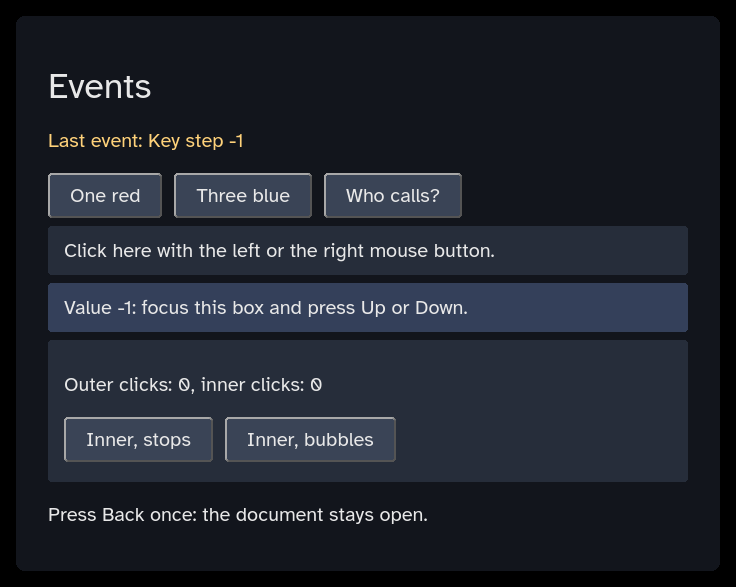

Events¶
An element runs an expression when it receives an event. Use it to turn clicks, keys and Back into calls to your game.
data-event-<event>="..." takes any RmlUi event name (list; click, mouseup, keydown, back, ...), and its expression
is a list of calls separated by ;.
call(...)calls a function of a view model;callIf(...)calls it only while a condition is true.- An event bubbles: it runs the handlers of the element and then of its ancestors.
stopPropagation()ends it at the element. backanduiaction(UI action) are events too.data-action="close"anddata-action="open:<package path>"are handled by the plugin instead of as view model calls.
The Events sample shows each form; its view model has a LastEvent text that the calls write.
Calls¶
call('<path>', '<Function>', args...) calls a function of a view model. The path '' is the model of the element's
nearest data-model; a path such as 'Child' or 'Children[1]' names a view model held by that model
(Nested view models). The function must be:
- a
BlueprintCallableUFUNCTIONthat is not const, not pure, not a network function and not aBlueprintNativeEventorBlueprintImplementableEvent. Otherwise nothing is called, the log warns that the function "is not a callable event function", and the validator reportsunknown-function. - called with exactly as many arguments as it has parameters. Otherwise nothing is called, the log warns that it
"received N arguments but takes M", and the validator reports
call-arity.
Its return value and out parameters are dropped. A call does not change a field itself; the function does, and the document updates when it broadcasts the field.
<button id="ev-red" class="ev-button" data-event-click="call('', 'Pick', 'Red', 1)">One red</button>
<button id="ev-blue" class="ev-button" data-event-click="call('', 'Pick', 'Blue', 3)">Three blue</button>
<button id="ev-caller" class="ev-button" data-event-click="call('', 'ShowCaller')">Who calls?</button>
UFUNCTION(BlueprintCallable, Category = "Samples")
void Pick(const FString& Colour, int32 Amount);
void UArcRmlSamplesEventsViewModel::Pick(const FString& Colour, int32 Amount)
{
UE_MVVM_SET_PROPERTY_VALUE(LastEvent, FText::Format(INVTEXT("Picked {0} x {1}"), Amount, FText::FromString(Colour)));
}
Numeric parameters take numbers and numeric text, and bool, text, name and FText parameters convert. An object
parameter takes 'vm:<path>', the path of a view model reachable from the element's model, as in
call('', 'Select', 'vm:Children[1]'). 'target:data-x' passes the data-x attribute of the element that has the
handler, as in call('', 'Choose', 'target:data-id').
Arguments from the element¶
An argument is an expression, so a call can pass what the element knows: the row and index of a data-for
(call('', 'Remove', i) in Lists), a component prop
(Components) and the values of the event, ev.<name>, such as ev.button of a mouse event and ev.key of a key event
(callIf, Event reference).
callIf¶
callIf(condition, '<path>', '<Function>', args...) calls only while the condition is true. A mouse event has
ev.button, 0 for the left and 1 for the right button, and a key event has ev.key, the key's name as a browser
reports it (ArrowUp, Enter, Escape, a letter in lower case):
<div id="ev-mouse" class="ev-box" data-event-mouseup="callIf(ev.button == 0, '', 'Pointer', 'left'); callIf(ev.button == 1, '', 'Pointer', 'right')">Click here with the left or the right mouse button.</div>
<div id="ev-keys" class="ev-box ev-focusable" autofocus="" data-event-keydown="callIf(ev.key == 'ArrowUp', '', 'Step', 1); callIf(ev.key == 'ArrowDown', '', 'Step', -1); stopPropagation(ev.key == 'ArrowUp' || ev.key == 'ArrowDown')">Value {{ Value }}: focus this box and press Up or Down.</div>
The second box takes keys only while it is focused. Its autofocus attribute focuses it when the document opens. A
<button> is a navigation stop by default, but a <div> or <span> is not, so the sample's style sheet makes the box
one:
.ev-focusable {
tab-index: auto;
nav: auto;
}
stopPropagation¶
An event bubbles from the element to its ancestors, and every ancestor with a handler for it runs. stopPropagation()
ends that at the element; stopPropagation(condition) ends it only while the condition is true. In the keys box above,
a stopped keydown also skips the document's own default for that key, so ArrowUp and ArrowDown do not move focus.
Some events cannot be stopped; the Stop column of the Event reference says which.
In the sample, a click on "Inner, stops" counts only the inner click, and a click on "Inner, bubbles" also reaches the outer element:
<div id="ev-outer" class="ev-box" data-event-click="call('', 'Outer')">
<p>Outer clicks: {{ OuterCount }}, inner clicks: {{ InnerCount }}</p>
<div class="ev-row">
<button id="ev-inner-stop" class="ev-button" data-event-click="call('', 'Inner'); stopPropagation()">Inner, stops</button>
<button id="ev-inner-bubble" class="ev-button" data-event-click="call('', 'Inner')">Inner, bubbles</button>
</div>
</div>
The world context object¶
A function parameter named WorldContextObject is not an argument: the call fills it with the controller of the local player,
and the RML passes nothing for it. A view model function uses it to reach the player and the player's subsystems, such as
UArcRmlViewportSubsystem.
The "Who calls?" button of the listing under Calls runs ShowCaller:
UFUNCTION(BlueprintCallable, Category = "Samples", meta = (WorldContext = "WorldContextObject"))
void ShowCaller(UObject* WorldContextObject);
void UArcRmlSamplesEventsViewModel::ShowCaller(UObject* WorldContextObject)
{
const UWorld* World = WorldContextObject ? WorldContextObject->GetWorld() : nullptr;
if (!World)
{
return;
}
UE_MVVM_SET_PROPERTY_VALUE(LastEvent, FText::Format(INVTEXT("Called by {0} at {1} s"), FText::FromString(WorldContextObject->GetName()), FMath::FloorToInt(World->GetTimeSeconds())));
}
Back¶
In a document whose input mode is menu or all, a Back press (the Back action of the project's CommonUI input, see
Project setup) runs the back event on the focused element and its ancestors. If
no handler stops it, the document closes. In a child focus area, focus first returns to the parent area before the event
reaches the elements above the area (Back and the parent area). data-event-back
on <body> makes a document handle Back itself. In the sample, the first Back runs ArmBack and stops the event, so
the document stays open, and the second Back is not stopped and closes it:
<body data-model="events" data-event-back="callIf(!bBackArmed, '', 'ArmBack'); stopPropagation(!bBackArmed)">
void UArcRmlSamplesEventsViewModel::ArmBack()
{
UE_MVVM_SET_PROPERTY_VALUE(bBackArmed, true);
UE_MVVM_SET_PROPERTY_VALUE(LastEvent, INVTEXT("Back pressed: press it again to close"));
}
UI actions¶
An action of the document's Input Mapping Context (Input and gamepad) is sent to the
focused element as a uiaction event, or to <body> when nothing in the document is focused. data-event-uiaction
reads it as ev.action, the action's name. The action counts as handled only when the handler stops propagation;
call and callIf alone do not. The demo's loading screen runs ToggleDevBar for one action and stops only that one:
data-event-uiaction="callIf(ev.action == 'IA_ArcDemo_DevBar', '', 'ToggleDevBar'); stopPropagation(ev.action == 'IA_ArcDemo_DevBar')"
Without the stopPropagation the function still runs, but the action is not consumed: it goes on to the document's
data-drag-action, data-hotkey and
data-hotkey-cycle elements, and is only logged ("has no handler") when none of
them takes it. See Event reference.
<meta name="any-input" content="true"/> (Documents) sends an anyinput event on every key and pad
press, with ev.key, ev.device and ev.action. The press keeps its normal route whatever the handler does.
Document actions¶
data-action="close" closes the document and data-action="open:<package path>" opens another one. They are handled by
the plugin and are not view model calls (Documents).
Run it¶
Play in the map L_ArcRmlSamples and type ArcRmlSamples.Open Events in the console (Samples).

Next¶
- Documents: the head, opening and closing.